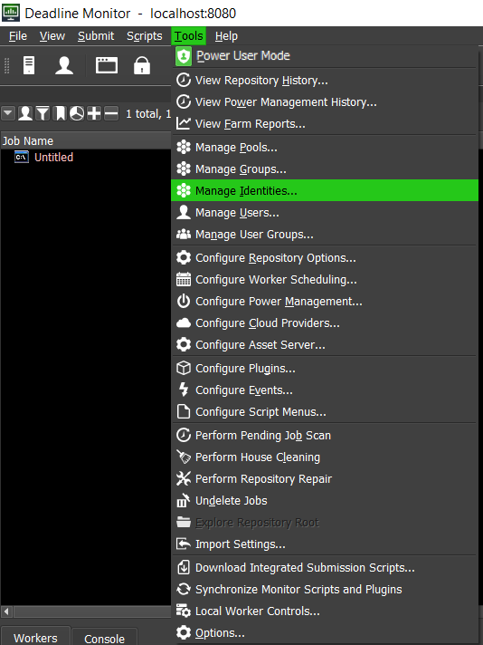
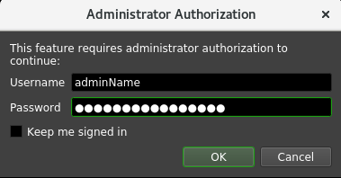
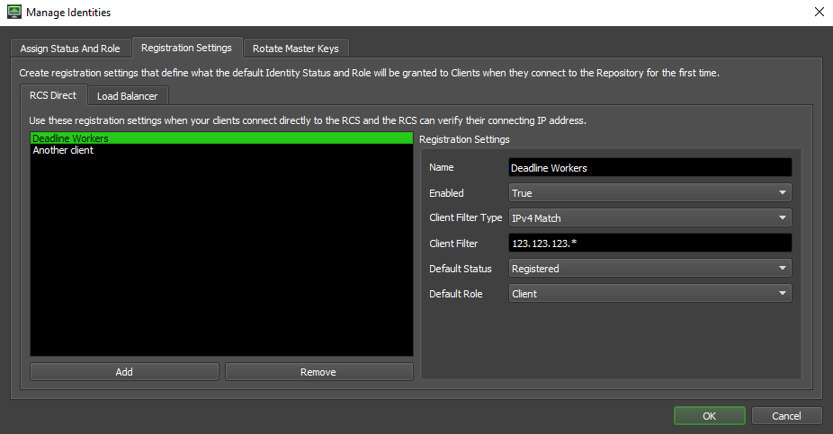
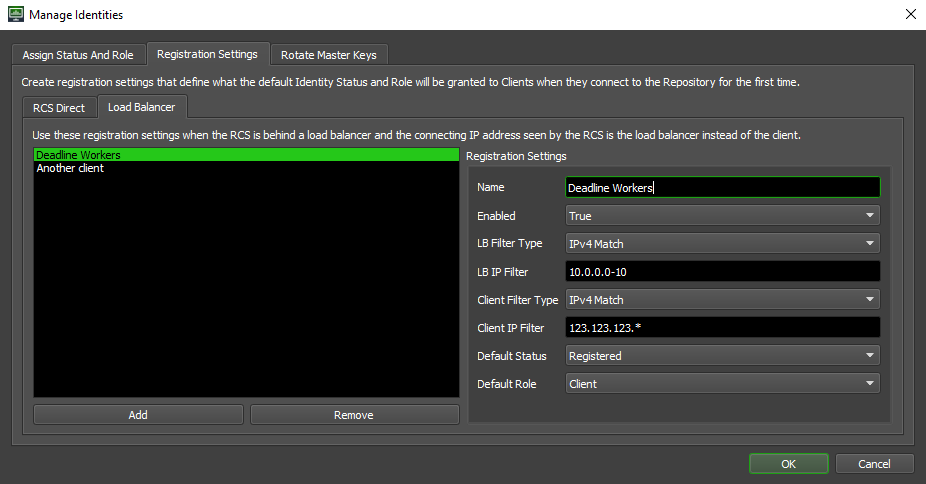

Deadline Secrets Management¶
Deadline Secrets Management is a feature introduced in Deadline 10.1.10 for securely managing storage and access of Secrets for your render farm. This feature provides strong encryption for all of Deadline’s Secrets, and provides additional tools for administrators to control secret access by clients. This feature also includes granular audit logging so you know who requests secrets when, and what the outcome is.
This feature is enabled by running the Repository Installer, and requires you to create an Administrator User. Access to secrets is controlled through the Identity Management mechanism. Note that this feature requires all Client communications connect to the Remote Connection Server over a SSL/TLS connection to securely Authenticate and Authorize requests. You may refer to the Glossary for definitions on the common terms used throughout this page.
Please see the Getting Started page for an example walkthrough if this is your first time using Deadline Secrets Management.
Identity Management¶
Any Deadline application connected to your farm will automatically register itself as an Identity in the Database. However, it will be unable to retrieve or store any secret until it is given the appropriate Status and Role. Please see the below sections for more information on “Registration Status” and the “Assigned Role”. Note that Power User is not a Secrets Management Identity, but a separate mechanism that only controls access to the administrative features in Deadline Monitor.
Registration Status¶
Indicates the Registration status of an Identity. There are three possible Registration statuses:
Pending
This is the default status for an Identity that has just registered itself. It cannot access any secrets with this status.
Registered
This status allows Identities to make use of the Secrets API, so long as they have the appropriate Identity Role.
Revoked
Identities with this status will not be allowed to make use of the Secrets API.
Assigned Roles¶
Assigned Roles define the permissions of an Identity. There are three Assigned Roles:
Administrator
The administrator role is given to users that are created either by the Repository Installer when enabling the Deadline Secrets Management feature for the first time, or by running the CreateNewAdmin command. Note: there can be more than one Administrator user. All Administrators are equal and have full read and write access to all secrets.
Server
The Server role is intended to be granted to your machine(s) running the Remote Connection Server application. The Server role is granted to a registered machine by an administrator in the Monitor UI. In order to encrypt and decrypt secrets, the master key must be assigned to the Server by and Administrator user running the GrantKeyAccessToServer command. Servers can encrypt and decrypt all secrets, and are responsible for providing secrets to approved clients.
Client
The Client role is typically intended to be granted to any of your machines running the Worker application. The Client role is granted to a registered machine by an administrator in the Monitor UI. Clients can request storage of secrets not in the Administrator Secret Access Level, and can retrieve secrets from all namespaces when authenticating through the server.
Assigning Identity Status and Roles¶
Identities are managed through the Monitor application. Note that this interface is only available through Remote Connection to a Remote Connection Server and requires Administrator credentials to access.
As a Power User, select “Tools > Manage Identities…” and enter your administrator credentials in the popup. This will open the Manage Identities user interface, where you can set the status and roles of any registered Identities.
 
Removing Identities¶
In the same Manage Identities menu used for assigning status and roles to identities, there is a Remove button that will let you remove identities that you no longer want to keep entries for. An example of where this could be useful is for Spot Fleet instances that were running Deadline Workers and connected to the farm, but have since been terminated and you no longer have access to. After selecting one or more identities and pressing the Remove button, the registration status column will change to Removed to signify that the entry for this identity will be removed after pressing the OK button to close the Manage Identities menu. Note that while this does show in the registration status column, this isn’t an actual registration status and will completely remove the entry for this identity from the database. The next time the Manage Identity menu is opened, the entry will no longer appear. See the image below for an example of what an entry looks like when the Remove button has been pressed and it is marked for removal.
Identity Registration Settings¶
An alternative to manually Assigning Identity Status and Roles is creating Registration Settings that will be applied to any connecting client when they register for the first time. These settings can be used to automatically set the Registration Status and Assigned Role of a registering client that matches the given filters. Note that only a valid administrator user can access these settings through the Monitor application’s Manage Identities user interface.
There are two types of Registration Settings that can be applied. The first type is to be used when clients connect directly to the RCS and the other is for when a load balancer is set up in front of the RCS. Generally, you should only need to use one type or the other. If you do use both types, be aware that when registration settings are being compared to a new client to see if they should be applied, the load balancer registration settings will be checked first and if a match is found, no other registration settings will be checked and the settings from the matching one will be applied. There is no guaranteed order for how registration settings of the same type will be checked, so it is important to be sure that the filters you’re using on each registration setting don’t overlap with other registration settings.
RCS Direct Registration Settings
Each field will be explained below:
Name: The optional name of this specific registration setting.
Enabled: If set to “True”, these settings will be applied, if “False”, these settings will never be used.
- Client Filter Type: What type of filtering strategy will be used.
- IPv4 Match: Applies the settings to a registering client based on the IP Address of the connection (for example, if your client has its traffic routed through a load balancer, the IP will be matched to that of the load balancer). You can specify specific IP addresses, or a range of IP addresses (by using wildcards or ranges). Note that this only works with IPv4. Do not use this for IPv6 addresses. For example:
192.168.0.1-150
192.168.0.151-255
192.168.0.*
- IPRegex Match: Applies the settings to a registering client based on the IP Address of the connection (for example, if your client has its traffic routed through a load balancer, the IP will be matched to that of the load balancer). You can use regular expressions to match a Client’s IP address. This works with both IPv4 and IPv6 addresses. For example:
192.168..* will match IPv4 addresses not transported inside IPv6 starting with “192.168”.
[:fF]*192.168. should match IPv4 address even if they are carried over IPv6 addresses (ex “::ffff:192.168.2.128”).
- Client Filter: The value of the filter, which will behave differently depending on the Client Filter Type.
Note: Filter values that are too permissive (for example, the value of “*”, which would apply to any client IP) will not be allowed due to the risk of allowing secret access to any connecting client
Default Status: The Registration Status that will be applied to the registering client that matches the filter.
Default Role: The Assigned Role that will be applied to the registering client that matches the filter.
Load Balancer Registration Settings
When a load balancer is being used, the connecting IP addresses observed by the RCS will always be those from the load balancer, so creating rules based solely on this field won’t work. These registration settings add an additional filter so the IP addresses of the load balancer can be specified along with the IP addresses of the client. The RCS will then compare the connecting IP it observes to the load balancer filter and the source IP it observes to the client filter. The source IP is determined by checking the request to see if an X-Forwarded-For header was added by the load balancer. If it is present, it will be used, otherwise the source IP will be set to the connecting IP.
The reason both connecting IP and source IP are used, instead of just the source IP, is to prevent clients from being able to spoof their source IP and have registration settings applied.
Most fields have the same meaning they do for the RCS Direct Registration Settings. The only difference is there are 2 filters instead of one. The LB Filter Type and LB IP Filter will be applied to the connecting IP address the RCS observes and the Client Filter Type and Client IP Filter will be applied to the source IP.
Rotating Master Keys¶
Also in the Manage Identities menu, there is a tab that can be used to mark master keys for rotation. Master keys are used to securely encrypt and decypt secrets in the database. More information can be found in the Master Keys section.
Master keys get marked for rotation by selecting one in the menu, pressing the rotate button, and then pressing OK to close the Manage Identities menu. Once the menu has been closed, a key rotation will be requested and then automatically executed by a running RCS.
When the Manage Identities menu gets opened again after the rotation is complete, the version should be increased by 1 and the Creator column should now list the identity of the RCS machine that performed the rotation.
Secret¶
A secret is any value that needs to be securely stored. This includes API keys, Usage Based Licensing activation codes, passwords, etc. Additionally, any Plugin Parameter with the Control Type of “Password” will be treated as a secret.
Deadline Managed Secrets¶
The following are a list of Deadline managed secrets:
Secret Access Levels¶
Depending on the type of secret, the access rights of that secret differ. Currently, the different access levels of secrets in Deadline are the following:
Administrator
This refers to administrator-level secrets, such as Email Notification SMTP passwords, Render-As User passwords, UBL Activation Codes, UBL URLs, and Mapped Drives.
Application Plugins
This refers to application plugin-level secrets, and can be written and read by all Assigned Identity Roles.
Event Plugins
This refers to event plugin-level secrets, and can be written and read by all Assigned Identity Roles.
(Deprecated) Cloud Plugins
This refers to cloud plugin-level secrets, and can be written and read by all Assigned Identity Roles. (Note that cloud plugins are deprecated)
(Deprecated) Balancer Plugins
This refers to balancer plugin-level secrets, and can be written and read by all Assigned Identity Roles. (Note that the Balancer is deprecated)
Master Key¶
When running the Repository Installer for the first time, an Administrator user and a Master Key will be created. This Master Key is used to securely encrypt and decrypt secrets stored in the database. The initial Master Key will be assigned to the initial admin. Any Server or Administrator that needs to manage secrets is required to have the latest master key to manage secrets.
Rotating keys regularly is a common and good security practice. Please see Managing and Rotating Keys section for more information.
Administrator Commands¶
To properly manage secrets, the Secrets Management DeadlineCommand has been added. The Secrets Management DeadlineCommand lists a number of sub-commands used to manage Administrators, Master Keys, and Identities.
Note that the Secrets Management DeadlineCommands can only be run over direct connection, and are expected to be run on a Server machine.
For all the examples provided here the commands are ran on a Linux environment with the admin name set to be centos. The command execution is analogous on Windows machines.
AssignRole¶
$ ./deadlinecommand.exe secrets help AssignRole
AssignRole
Assign a role to multiple identities that match the specified IP address
filter. Note that this command also set the registration status to
"Registered". For unsuccessful assignments, a warning message will be
displayed.
[userId] The user Id of the Admin user
[ipAddressFilter] The filter to match the Identity Source IP
address. "*" can be used to match all cases.
(i.g. "10.1.1.1" or "10.1.1.*" or "*")
[osUserFilter] The filter to match OSUser. "*" can be used to
match all cases. (i.g. "root" or "centos" or
"*")
[roleToBeAssigned] The role to be assigned. [Client|Server]
Possible values for [ipAddressFilter] can be found using the ListAllMachines Secrets Management DeadlineCommand. The AssignRole command is useful for setting up initial server as outlined in Getting Started guide for Secrets Management.
In addition, AssignRole can be used to mass assign roles. Say you have machines that have IP addresses 10.1.1.* and you want to Register them all and assign them the Client role. For this task you would run:
$ ./deadlinecommand.exe secrets AssignRole centos "10.1.1.*" "*" "Client"
Make sure to wrap [ipAddressFilter], [osUserFilter] and [roleToBeAssigned] in quotation marks. For use examples of [ipAddressFilter] please see command ListAllMachines.
The GUI version of this command can be found in Deadline Monitor through Tools > Manage Identities….
ConfigureServerMachine¶
$ ./deadlinecommand.exe secrets help ConfigureServerMachine
ConfigureServerMachine
Configures a Secrets Management server machine, assigning the machine that
runs this command a server role and granting it access to the specified master
key.
[userId] The user Id of the Admin user
[masterKeyId] The Id of the master key
[osUser] Name of the OS User that the deadline client
applications will be running as on this machine.
[--password] Optional. An option that determines how the
Admin password will be read. Value can be either
'stdin' or 'env:<NAME>'. If stdin, the password
will be read from stdin. If env:<NAME> the
password will be read from an enviornment
variable called <Name>.
[--configureAll] Optional. Whether all identities that share the
same IP address and OS user as this machine
should be registered
This is a convenience command for configuring the initial Server machine. It will assign a server role and grant key access to an identity on the machine that runs the command. The --configureAll option is for cases where a machine’s original identity was lost and a new one was created, causing multiple entries for the same IP and OS user.
Example usage: Say I am installing the Remote Connection Server on a machine and I want to initialize it to be able to use Secrets Management. In addition I know that the Remote Connection Server will be running as a user whose user name is jeff.
$./deadlinecommand.exe secrets ConfigureServerMachine admin1 defaultKey jeff
admin1 is the Secrets Management admin username that I set during the repository installation, defaultKey is the default name of the master key, and jeff is the operating system username of the user who will be running the Remote Connection Server.
CreateInitialAdmin¶
$ ./deadlinecommand.exe secrets help CreateInitialAdmin
CreateInitialAdmin
Create the initial Admin user. This command will fail if there is already one.
[userId] The user Id of the Admin user
[masterKeyId] The Id of the master key to be generated
This command is called by the Repository Installer when creating the first Administrator user. You typically do not need to use this command, unless you want to manually enable the Secrets Management feature without running the Repository Installer.
CreateNewAdmin¶
$ ./deadlinecommand.exe secrets help CreateNewAdmin
CreateNewAdmin
Create a new Admin user and grant access to the given master key
[userId] The user Id of the Admin user
[masterKeyId] The Id of the master key to be granted
[newAdminUserId] The Id of new Admin user
Use this when you need to grant admin status to another user:
$ ./deadlinecommand.exe secrets CreateNewAdmin existingUser masterKey newUser
newUser is equal in authority to existingUser as they both can revoke each other through the command RevokeAdminUser. existingUser must own the masterKey, which can be achieved by granting it by another admin user through Secrets Management DeadlineCommand GrantKeyAccessToAdmin, created with it using CreateInitialAdmin or CreateNewAdmin. Upon an installation that has Secrets Management enabled, the initial admin owns the masterKey called defaultKey.
You can get the list of available and enabled master keys for [masterKeyId] through ListAllMasterKeys Secrets Management DeadlineCommand.
CreateLoadBalancerIdentityRegistrationSetting¶
$ ./deadlinecommand.exe secrets help CreateLoadBalancerIdentityRegistrationSetting
CreateLoadBalancerIdentityRegistrationSetting <userId> <name> <connectingFilterType> <connectingFilterValue> <sourceFilterType> <sourceFilterValue> <defaultRole> <defaultRegistrationStatus> <enabled> [<--password>]
Create an identity registration setting to automatically assign a role to
identities based on the connection's IP address and the source IP address of
the request.
userId The user Id of the Admin user
name The user-defined name of the registration
setting
connectingFilterType The type of filter expression for the connecting
IP address. Possible values are: "IPv4Match",
"IPRegex"
connectingFilterValue The filter expression for the connecting IP
address
sourceFilterType The type of filter expression for the source IP
address. Possible values are: "IPv4Match",
"IPRegex"
sourceFilterValue The filter expression for the source IP address
defaultRole The default role to apply to the identity.
Possible values are: "Client", "Server"
defaultRegistrationStatus The registration status that gets applied to a
matching identity. Possible values are:
"Unknown", "Pending", "Registered", "Revoked"
enabled Whether the registration setting is enabled.
Possible values are: "true" or "false".
--password Optional. An option that determines how the
Admin password will be read. Value can be either
'stdin' or 'env:<NAME>'. If stdin, the password
will be read from stdin. If env:<NAME> the
password will be read from an enviornment
variable called <Name>.
Use this command to create an identity registration setting that automatically applies a role and status to an identity based on configurable filter expressions that match the connecting IP address of a load balancer and the forwarded IP address of a Deadline Client. If the command successfully creates the identity registration setting, the new setting will be output.
$ ./deadlinecommand.exe secrets CreateLoadBalancerIdentityRegistrationSetting admin1 newSettingName IPv4Match 1.2.3.4 IPRegex 5.6.7.8 Server Registered true
Please enter your Admin password:
ID Name Connecting IP Filter Type Connecting IP Filter Source IP Filter Type Source IP Filter Default Role Default Status Enabled
======================== ============== ========================= ==================== ===================== ================ ============ ============== =======
6hF9ZqujhESYQSuQoahdng== newSettingName IPv4Match 1.2.3.4 IPRegex 5.6.7.8 Server Registered True
CreateRcsDirectIdentityRegistrationSetting¶
$ ./deadlinecommand.exe secrets help CreateRcsDirectIdentityRegistrationSetting
CreateRcsDirectIdentityRegistrationSetting <userId> <name> <filterType> <filterValue> <defaultRole> <defaultRegistrationStatus> <enabled> [<--password>]
Create an identity registration setting to automatically assign a role to
identities based on their connecting IP address.
userId The user Id of the Admin user
name The user-defined name of the registration
setting
filterType The type of filter expression for the connecting
IP address. Possible values are: "IPv4Match",
"IPRegex"
filterValue The filter expression for the connecting IP
address
defaultRole The default role to apply to the identity.
Possible values are: "Client", "Server"
defaultRegistrationStatus The registration status that gets applied to a
matching identity. Possible values are:
"Unknown", "Pending", "Registered", "Revoked"
enabled Whether the registration setting is enabled.
Possible values are: "true" or "false".
--password Optional. An option that determines how the
Admin password will be read. Value can be either
'stdin' or 'env:<NAME>'. If stdin, the password
will be read from stdin. If env:<NAME> the
password will be read from an enviornment
variable called <Name>.
Use this command to create an identity registration setting that automatically applies a role and status to an identity based on a configurable filter expression that matches the connecting IP address of the Deadline Client. If the command successfully creates the identity registration setting, the new setting will be output.
$ ./deadlinecommand.exe secrets CreateRcsDirectIdentityRegistrationSetting admin1 newSettingName IPv4Match 1.2.3.4 Server Registered true
Please enter your Admin password:
ID Name IP Filter Type IP Filter Default Role Default Status Enabled
======================== ============== ============== ========= ============ ============== =======
lIULr8fDiUeWOkDU68NkDQ== newSettingName IPv4Match 1.2.3.4 Server Registered True
DeleteLoadBalancerIdentityRegistrationSetting¶
$ ./deadlinecommand.exe secrets help DeleteLoadBalancerIdentityRegistrationSetting
DeleteLoadBalancerIdentityRegistrationSetting <userId> <settingId> [<--password>]
Deletes an existing identity registration settings that automatically assign a
role for new identities based on the connection's IP address and the source IP
address of the request.
userId The user Id of the Admin user
settingId The unique identifier for the registration
setting to delete
--password Optional. An option that determines how the
Admin password will be read. Value can be either
'stdin' or 'env:<NAME>'. If stdin, the password
will be read from stdin. If env:<NAME> the
password will be read from an enviornment
variable called <Name>.
Use this command to delete an existing identity registration setting that automatically applies a role and status to an identity based on configurable filter expressions that match the connecting IP address of a load balancer and the forwarded IP address of a Deadline Client. If the command successfully deletes the identity registration setting, the command will output:
$ ./deadlinecommand.exe secrets DeleteLoadBalancerIdentityRegistrationSetting admin1 ndCbF7ZcSEWA6VWLhxFQjw==
Please enter your Admin password:
Load balancer identity registration setting "ndCbF7ZcSEWA6VWLhxFQjw==" deleted.
DeleteRcsDirectIdentityRegistrationSetting¶
$ ./deadlinecommand.exe secrets help DeleteRcsDirectIdentityRegistrationSetting
DeleteRcsDirectIdentityRegistrationSetting <userId> <settingId> [<--password>]
Deletes an existing identity registration settings that automatically assign a
role for new identities based on their connecting IP address.
userId The user Id of the Admin user
settingId The unique identifier for the registration
setting to delete
--password Optional. An option that determines how the
Admin password will be read. Value can be either
'stdin' or 'env:<NAME>'. If stdin, the password
will be read from stdin. If env:<NAME> the
password will be read from an enviornment
variable called <Name>.
Use this command to delete an identity registration setting that automatically applies a role and status to an identity based on a configurable filter expression that matches the connecting IP address of the Deadline Client. If the command successfully deletes the identity registration setting, the command will output:
$ ./deadlinecommand.exe secrets DeleteRcsDirectIdentityRegistrationSetting admin1 eRCkR77Srk+vB5/j3a18Sg==
Please enter your Admin password:
RCS direct identity registration setting "eRCkR77Srk+vB5/j3a18Sg==" deleted.
DisableMasterKey¶
$ ./deadlinecommand.exe secrets help DisableMasterKey
DisableMasterKey
Disable a master key
[userId] The user Id of the Admin user
[masterKeyId] The Id of the master key to be disabled
If in the event that a master key has been compromised, you can disable the master key. This will cause all secrets that were encrypted by that master key to become irretrievable until a new key is generated and granted.
An example of disabling a master key:
$ ./deadlinecommand.exe secrets ListAllMasterKeys centos
Please enter your Admin password:
Key Status Version
========== ======= =======
defaultKey Enabled 0
$ ./deadlinecommand.exe secrets DisableMasterKey centos defaultKey
Please enter your Admin password:
Disabled master key (defaultKey).
$ ./deadlinecommand.exe secrets ListAllMasterKeys centos
Please enter your Admin password:
Key Status Version
========== ======== =======
defaultKey Disabled 0
Make sure to have the correct spelling of the key as you can disable nonexistent keys:
$ ./deadlinecommand.exe secrets DisableMasterKey centos keyThatDoesNotExist
Please enter your Admin password:
Disabled master key (keyThatDoesNotExist).
Disabling a key makes it useless for the admin users and servers that hold it. If you disable a key, then you will need have an admin generate a new one using GenerateNewMasterKey. This admin can then grant this key to other admin users and servers using Secrets Management DeadlineCommand GrantKeyAccessToAdmin and GrantKeyAccessToServer. You will then need to manually re-save each secret with the PutSecret command using the new key.
If you are looking to update your keys in a regular situation in which they are not compromised, then please refer to RequestKeyRotation.
DisableSecret¶
$ ./deadlinecommand.exe secrets help DisableSecret
DisableSecret
Disable secret
[userId] The user Id of the Admin user
[secretId] The Id of the secret to be disabled
You can disable a secret if you no longer wish for the secret value to be used by any Deadline Client applications. Note that when a secret has been disabled, it cannot be re-enabled, and will be rendered obsolete. You will not be able to view the secret until you save a new secret through the use of PutSecret.
In this example, we will initially save “blabla” as mySecret and then disable it.
$ ./deadlinecommand.exe secrets PutSecret centos mySecret ""
Please enter your Admin password:
New secret value:
Retype new secret value:
Successfully stored the secret.
$ ./deadlinecommand.exe secrets ListAllSecrets centos
Please enter your Admin password:
Secret Id Secret Version MasterKey Id MasterKey Version Secret Description Secret Disabled
=========================================== ============== ============ ================= ================== ===============
mySecret 0 defaultKey 0 False
$ ./deadlinecommand.exe secrets GetSecret centos mySecret
Please enter your Admin password:
Secret Value
=============
blabla
$ ./deadlinecommand.exe secrets DisableSecret centos mySecret
Please enter your Admin password:
Disabled secret (mySecret).
$ ./deadlinecommand.exe secrets ListAllSecrets centos
Please enter your Admin password:
Secret Id Secret Version MasterKey Id MasterKey Version Secret Description Secret Disabled
=========================================== ============== ============ ================= ================== ===============
mySecret 0 defaultKey 0 True
$ ./deadlinecommand.exe secrets GetSecret centos mySecret
Please enter your Admin password:
Secret Value
=============
After being disabled, the secret is now returned as an empty string.
GenerateNewMasterKey¶
$ ./deadlinecommand.exe secrets help GenerateNewMasterKey
GenerateNewMasterKey
Genearte a new master key specified by masterKeyId. Note that you can only
have one master key enabled at once. Please disable the existing one before
you generate a new one.
[userId] The user Id of the Admin user
[masterKeyId] The Id of the new master key to be generated
Having disabled the existing key through DisableMasterKey, we now generate a new one:
$ ./deadlinecommand.exe secrets GenerateNewMasterKey centos newKey
Please enter your Admin password:
New master key is successfully generated.
The admin user who called the command now is the owner of the key and can grant it to other servers and admins through GrantKeyAccessToServer and GrantKeyAccessToAdmin respectively.
If you try to generate another key:
$ ./deadlinecommand.exe secrets GenerateNewMasterKey centos newKey2
Please enter your Admin password:
Error: [SecretsManagement] You cannot have two enabled master keys at the same time. Please disable the existing one.
you will get an error. This is because it is only possible to have a maximum of one enabled key at any given time. To see all keys and their enabled status run ListAllMasterKeys.
GetLoadBalancerIdentityRegistrationSettings¶
$ ./deadlinecommand.exe secrets help GetLoadBalancerIdentityRegistrationSettings
GetLoadBalancerIdentityRegistrationSettings <userId> [<--password>]
Lists the existing identity registration settings that automatically assign a
role for new identities based on the connection's IP address and the source IP
address of the request.
userId The user Id of the Admin user
--password Optional. An option that determines how the
Admin password will be read. Value can be either
'stdin' or 'env:<NAME>'. If stdin, the password
will be read from stdin. If env:<NAME> the
password will be read from an enviornment
variable called <Name>.
Use this command to list all identity registration setting that automatically apply a role and status to an identity based on configurable filter expressions that match the connecting IP address of a load balancer and the forwarded IP address of a Deadline Client.
$ ./deadlinecommand.exe secrets GetLoadBalancerIdentityRegistrationSettings admin1
Please enter your Admin password:
ID Name Connecting IP Filter Type Connecting IP Filter Source IP Filter Type Source IP Filter Default Role Default Status Enabled
======================== ============ ========================= ==================== ===================== ================ ============ ============== =======
ndCbF7ZcSEWA6VWLhxFQjw== settingOne IPv4Match 1.1.1.1 IPv4Match 2.2.2.2 Server Registered True
gih3+VuhCUeFUj812jOwiQ== settingTwo IPRegex 1\.1\.1\..* IPRegex 3\.3\.3\.3 Server Registered True
6hF9ZqujhESYQSuQoahdng== settingThree IPv4Match 1.2.3.4 IPRegex 5\.6\.7\..* Server Registered True
GetRcsDirectIdentityRegistrationSettings¶
$ ./deadlinecommand.exe secrets help GetRcsDirectIdentityRegistrationSettings
GetRcsDirectIdentityRegistrationSettings <userId> [<--password>]
Lists the existing identity registration settings that automatically assign a
role for new identities based on their connecting IP address.
userId The user Id of the Admin user
--password Optional. An option that determines how the
Admin password will be read. Value can be either
'stdin' or 'env:<NAME>'. If stdin, the password
will be read from stdin. If env:<NAME> the
password will be read from an enviornment
variable called <Name>.
Use this command to list all identity registration setting that automatically apply a role and status to an identity based on a configurable filter expression that matches the connecting IP address of the Deadline Client.
$ ./deadlinecommand.exe secrets GetRcsDirectIdentityRegistrationSettings admin1
Please enter your Admin password:
ID Name IP Filter Type IP Filter Default Role Default Status Enabled
======================== ============ ============== =============== ============ ============== =======
eRCkR77Srk+vB5/j3a18Sg== settingOne IPRegex 1\.2\.3\..* Client Pending False
Vrh7GIlcqEig1l+3KJttgw== settingTwo IPv4Match 192.168.0.1-255 Server Registered True
lIULr8fDiUeWOkDU68NkDQ== settingThree IPv4Match 10.0.0.0-255 Client Registered True
GetSecret¶
$ ./deadlinecommand.exe secrets help GetSecret
GetSecret
Retrieve a secret value. Note that this command can only work on a valid
server machine.
[userId] The user Id of the Admin user
[secretId] The Id of the secret
This is run on a server machine that has had a valid key granted to it through the Secrets Management DeadlineCommand GrantKeyAccessToServer. To know which [secretId] corresponds to the secret you want to see then run the Secrets Management DeadlineCommand ListAllSecrets:
$ ./deadlinecommand.exe secrets ListAllSecrets centos
Please enter your Admin password:
Secret Id Secret Version MasterKey Id MasterKey Version Secret Description Secret Disabled
=========================================== ============== ============ ================= ================== ===============
/admin/ublsettings/UsageBasedActivationCode 0 defaultKey 0 False
/admin/ublsettings/UsageBasedURL 0 defaultKey 0 False
In this case, the secrets /admin/ublsettings/UsageBasedActivationCode and /admin/ublsettings/UsageBasedURL are saved through the Deadline Monitor in Tools > Configure Repository Options… > Usage Based Licensing in textboxes labeled: URL and Activitation Code. However, you can also update the value using Secrets Management DeadlineCommand PutSecret.
If you need to know what the value of /admin/ublsettings/UsageBasedURL is in the case that you forgot or do not have it saved elsewhere then you would run:
$ ./deadlinecommand.exe secrets GetSecret centos /admin/ublsettings/UsageBasedActivationCode
Please enter your Admin password:
Secret Value
=============
mysecret
The password here is printed to stdout.
If you enter a nonexistent [secretId] then you will just obtain an empty string:
$ sudo ./deadlinecommand.exe secrets GetSecret centos wrongId
Please enter your Admin password:
Secret Value
=============
GrantKeyAccessToAdmin¶
$ ./deadlinecommand.exe secrets help GrantKeyAccessToAdmin
GrantKeyAccessToAdmin
Grants access for the specified master key to an Admin user after a key
rotation. Note that this command can only work on a valid server machine.
[userId] The user Id of the Admin user
[masterKeyId] The Id of the master key to be granted
This command is run on the Server that has the key. The server would have obtained the key from GrantKeyAccessToServer. Use ListAllMasterKeys to assist in assigning the appropriate and enabled key and ListAllAdminUsers to select [userId].
GrantKeyAccessToServer¶
$ ./deadlinecommand.exe secrets help GrantKeyAccessToServer
GrantKeyAccessToServer
Grants access of the specified master key to the specified server
[userId] The user Id of the Admin user
[masterKeyId] The Id of the master key
[toServerUserId] The server to be granted key access]
An example of running the command:
$ ./deadlinecommand.exe secrets ListAllMasterKeys centos
Please enter your Admin password:
Key Status Version
========== ======= =======
defaultKey Enabled 0
$ ./deadlinecommand.exe secrets GrantKeyAccessToServer centos defaultKey 61-3A-02-1B-AF-75-81-2D-AF-52-FB-93-85-E1-19-9F-11-4B-7F-2E-34-A4-83-FC-59-42-19-D2-E3-DA-07-76
Please enter your Admin password:
Successfully granted access to the server: (61-3A-02-1B-AF-75-81-2D-AF-52-FB-93-85-E1-19-9F-11-4B-7F-2E-34-A4-83-FC-59-42-19-D2-E3-DA-07-76
It is possible to grant disabled keys to servers. Make sure you are granting the right key. Run ListAllMasterKeys to get a list of all keys.
Value for [toServerUserId] can be obtained by running Secrets Management DeadlineCommand ListAllMachines.
Help¶
$ ./deadlinecommand.exe secrets help help
Help
Show help information for sub-command(s)
[sub-command] The name of a specific sub-command( optional )
To output all available commands:
$ ./deadlinecommand.exe secrets help
To output help for a specific command, say for GetSecret:
$ ./deadlinecommand.exe secrets help GetSecret
GetSecret
Retrieve a secret value. Note that this command can only work on a valid
server machine.
[userId] The user Id of the Admin user
[secretId] The Id of the secret
ListAllAdminUsers¶
$ ./deadlinecommand.exe secrets help ListAllAdminUsers
ListAllAdminUsers
List all admin users
[userId] The user Id of the Admin user
This will output both registered and revoked users. Users can be created/registered through CreateNewAdmin and revoked through RevokeAdminUser
$ ./deadlinecommand.exe secrets ListAllAdminUsers centos
Please enter your Admin password:
User Status
======= ==========
centos Registered
oldUser Revoked
ListAllLogs¶
$ ./deadlinecommand.exe secrets help ListAllLogs
ListAllLogs
Lists the Secret audit logs.
[userId] The user Id of the Admin user
[--numlogs] OPTIONAL: List only the N most recent logs,
where N is a non-negative integer
The logs contain the time, admin id who ran the action, the action and if the action was successful.
$ ./deadlinecommand.exe secrets ListAllLogs centos --numlogs 3
Please enter your Admin password:
Event Time (UTC), User Id, Action, Action information, Was successful
06/23/2020 12:37:36 centos CreateInitialAdminUser Created initial Admin and MasterKey(defaultKey). True
06/23/2020 12:37:38 centos ValidateAdminUserPassword Verified Admin password. True
06/23/2020 12:37:40 centos ValidateAdminUserPassword Verified Admin password. True
The logs are printed to stdout and can be redirected to a file.
We generally recommend keeping logs for up to 10 years as a security precaution.
ListAllMachines¶
$ ./deadlinecommand.exe secrets help ListAllMachines
ListAllMachines
List all registered machines
[userId] The user Id of the Admin user
[ipAddressFilter] The filter to match the Source IP addresses.
Surround arguments with quotation marks (i.g.
"10.1.1.1" or "10.1.1.*" or "*")
[roleFilter] The filter to match machine roles. Argument is
one of three: "Client","Server","*"
Make sure to wrap [ipAddressFilter] and [roleFilter] in quotation marks. An example:
$ ./deadlinecommand.exe secrets ListAllMachines centos "172.*" "*"
Please enter your Admin password:
Machine Name Source IP Address Connection IP Address OSUser Roles Status Id
============================================= ================= ===================== ====== ======== ========== ===============================================================================================
ip-172-31-0-185.ca-central-1.compute.internal 172.31.0.185 172.31.0.185 centos [Server] Registered 61-3A-02-1B-AF-75-81-2D-AF-52-FB-93-85-E1-19-9F-11-4B-7F-2E-34-A4-83-FC-59-42-19-D2-E3-DA-07-76
ip-172-31-0-185.ca-central-1.compute.internal 172.31.0.185 172.31.0.185 root [Server] Registered D4-87-E8-54-80-A6-79-25-05-F6-55-B5-7C-16-89-96-D2-A4-5F-D9-34-43-7E-36-A0-31-27-C2-56-69-4A-2D
Replacing "172.*" with "*", "172.*.*", "172.*.*.*", "*.31.*" or "*.0.*" will capture the two previous results while "*.0*." and "*.0*.* will not.
Replacing the last argument "*" with “Server” will capture the two previous results while "Client" will not.
ListAllMasterKeys¶
$ ./deadlinecommand.exe secrets help ListAllMasterKeys
ListAllMasterKeys
List all master keys
[userId] The user Id of the Admin user
The output will include disabled and enabled keys. It is possible to only have a maximum of one enabled key.
$ ./deadlinecommand.exe secrets ListAllMasterKeys centos
Please enter your Admin password:
Key Status Version
========== ======== =======
defaultKey Disabled 0
newkey Enabled 2
ListAllSecrets¶
$ ./deadlinecommand.exe secrets help ListAllSecrets
ListAllSecrets
List all secrets
[userId] The user Id of the Admin user
For example:
$ ./deadlinecommand.exe secrets ListAllSecrets centos
Please enter your Admin password:
Secret Id Secret Version MasterKey Id MasterKey Version Secret Description Secret Disabled
=========================================== ============== ============ ================= ================== ===============
/admin/ublsettings/UsageBasedActivationCode 0 defaultKey 0 False
/admin/ublsettings/UsageBasedURL 0 defaultKey 0 False
MigrateSecrets¶
$ ./deadlinecommand.exe secrets help MigrateSecrets
MigrateSecrets
Migrate existing secrets from the legacy storage to the Secrets Management
storage. Note that secrets will still exist in the legacy storage and can be
removed by running the "RemoveLegacySecrets" command. Be sure to run this
command before running "RemoveLegacySecrets" in order to not remove all secret
copies.
[userId] The user Id of the Admin user
[masterKeyId] The Id of the master key with which secrets will
be encrypted
This command is run in the installer and is not useful for general use unless working through a manual installation process.
PerformKeyRotation¶
PerformKeyRotation
Find master keys requested to be rotated and perform the key rotation process.
Note that this is usually done by one of the servers automatically. This
command provides the Admin an alternative way to kick off the process. Note
that this command can only work on a valid server machine after an Admin
requested the key rotation by using "RequestKeyRotation" command.
[userId] The user Id of the Admin user
This command requires for rotation to be requested through RequestKeyRotation. To see what the rotation will do, please see RequestKeyRotation.
PutSecret¶
$ ./deadlinecommand.exe secrets help PutSecret
PutSecret
Store a secret value. Note that this command can only work on a valid server
machine.
[userId] The user Id of the Admin user
[secretId] The Id of the secret
[secretDescription] The description of the secret
A commandline way of saving or updating secrets. You can leave the [secretDescription] empty by using quotation marks:
$ ./deadlinecommand.exe secrets PutSecret centos mySecretId ""
Please enter your Admin password:
New secret value:
Retype new secret value:
Successfully stored the secret.
RemoveLegacySecrets¶
$ ./deadlinecommand.exe secrets help RemoveLegacySecrets
RemoveLegacySecrets
Removes existing secrets from the legacy storage locations. Note that you can
run the "MigrateLegacySecrets" command to migrate existing secrets to the
Secrets Management locations before you remove from legacy store.
[userId] The user Id of the Admin user
This command is run in the installer and is not useful for general use unless working through a manual installation process.
RequestKeyRotation¶
$ ./deadlinecommand.exe secrets help RequestKeyRotation
RequestKeyRotation
Requests a key rotation for the given master key. After a key rotation is
requested, a valid Server will automatically complete the following: 1) A new
master key will be generated and assigned to the given Admin user profile. 2)
All Server profiles will be updated with the new master key. Note that other
Admin user profiles will NOT be updated with the new master key. To grant the
key access to other Admins after the key rotation is done, run the
"GrantKeyAccessToAdmin" command.
[userId] The user Id of the Admin user
[masterKeyId] The Id of the master key to be rotated
After a rotation request is submitted, the server will rotate the keys. This rotation request would be proccessed within a minute as that is the frequency that the server checks for such requests. Once the server picks up the request, the server will complete the equivalent of what PerformKeyRotation command does. This means that you can fast-track the rotation process by running PerformKeyRotation after running RequestKeyRotation.
The rotation involves generating a new master key for [masterKeyId] and incrementing the version as can be observed through ListAllMasterKeys before and after execution. The new key version will be given to those servers that already have the most recent version of the key. Finally, the stored secrets will be re-encrypted using this new key.
The GUI version of this command can be found in Deadline Monitor through Tools > Manage Identities….
The much more manual approach to this command is done through running DisableMasterKey, GenerateNewMasterKey and then granting the keys to appropriate admins and servers through GrantKeyAccessToAdmin and GrantKeyAccessToServer.
ResetAdminPassword¶
$ ./deadlinecommand.exe secrets help ResetAdminPassword
ResetAdminPassword
Change password for selected admin
[userId] The user Id of the Admin user
[adminUserIdForPassword] The user Id of the Admin user who will have
their password changed
Admin [userId] will reset the password of [adminUserIdForPassword]. You can reset your own password:
$ ./deadlinecommand.exe secrets ResetAdminPassword centos centos
Please enter your Admin password:
Please enter new password:
Please re-enter the new Admin password again:
Changed password for (centos).
RemoveRole¶
$ ./deadlinecommand.exe secrets help RemoveRole
RemoveRole
Remove a role from multiple identities that match the specified IP address
filter. For unsuccessful removals, a warning message will be displayed.
[userId] The user Id of the Admin user
[ipAddressFilter] The filter to match the Identity Source IP
address. "*" can be used to match all cases.
(i.g. "10.1.1.1" or "10.1.1.*" or "*")
[roleToBeRemoved] The role to be removed. [Client|Server]
This command is similar in functionality to AssignRole. The only difference is that in this case a role is removed which is specified in [roleToBeRemoved].
Make sure to wrap [ipAddressFilter] in quotation marks. More examples for IP arguments provided in ListAllMachines.
RevokeAdminUser¶
$ ./deadlinecommand.exe secrets help RevokeAdminUser
RevokeAdminUser
Revoke an admin user
[userId] The user Id of the Admin user
[adminUserToBeRevoked] The user Id of the Admin user being revoked by
Have admin [userId] revoke an admin [adminUserToBeRevoked]. As an admin you can revoke any other admin except yourself. Run ListAllAdminUsers Secrets Management DeadlineCommand to find all the admin users.
After an admin user has been revoked, they can no longer access any Secrets Management features.
RevokeKeyAccessFromServer¶
$ ./deadlinecommand.exe secrets help RevokeKeyAccessFromServer
RevokeKeyAccessFromServer
Revokes access of the specified master key from the specified server
[userId] The user Id of the Admin user
[masterKeyId] The Id of the master key
[toServerUserId] The server to have it's key access revoked
This command is useful for removing the access of a master key from an admin. The admin executing the command needs to have access to the key. This is a more precise version of DisableMasterKey.
UpdateLoadBalancerIdentityRegistrationSetting¶
$ ./deadlinecommand.exe secrets help UpdateLoadBalancerIdentityRegistrationSetting
UpdateLoadBalancerIdentityRegistrationSetting <userId> <settingId> <name> <connectingFilterType> <connectingFilterValue> <sourceFilterType> <sourceFilterValue> <defaultRole> <defaultRegistrationStatus> <enabled> [<--password>]
Updates an identity registration setting to automatically assign a role to
identities based on their connecting and source IP addresses.
userId The user Id of the Admin user
settingId The unique identifier for the registration
setting to modify
name The user-defined name of the registration
setting
connectingFilterType The type of filter expression for the connecting
IP address. Possible values are: "IPv4Match",
"IPRegex"
connectingFilterValue The filter expression for the connecting IP
address
sourceFilterType The type of filter expression for the source IP
address. Possible values are: "IPv4Match",
"IPRegex"
sourceFilterValue The filter expression for the source IP address
defaultRole The default role to apply to the identity.
Possible values are: "Client", "Server"
defaultRegistrationStatus The registration status that gets applied to a
matching identity. Possible values are:
"Unknown", "Pending", "Registered", "Revoked"
enabled Whether the registration setting is enabled.
Possible values are: "true" or "false".
--password Optional. An option that determines how the
Admin password will be read. Value can be either
'stdin' or 'env:<NAME>'. If stdin, the password
will be read from stdin. If env:<NAME> the
password will be read from an enviornment
variable called <Name>.
Use this command to update an existing identity registration setting that automatically applies a role and status to an identity based on configurable filter expressions that match the connecting IP address of a load balancer and the forwarded IP address of a Deadline Client. If the command successfully updates the identity registration setting, the new setting will be output.
$ ./deadlinecommand.exe secrets UpdateLoadBalancerIdentityRegistrationSetting admin1 6hF9ZqujhESYQSuQoahdng== newSettingName IPv4Match 1.2.3.4 IPRegex 5.6.7.8 Server Registered true
Please enter your Admin password:
ID Name Connecting IP Filter Type Connecting IP Filter Source IP Filter Type Source IP Filter Default Role Default Status Enabled
======================== ============== ========================= ==================== ===================== ================ ============ ============== =======
6hF9ZqujhESYQSuQoahdng== newSettingName IPv4Match 1.2.3.4 IPRegex 5.6.7.8 Server Registered True
UpdateRcsDirectIdentityRegistrationSetting¶
$ ./deadlinecommand.exe secrets help UpdateRcsDirectIdentityRegistrationSetting
UpdateRcsDirectIdentityRegistrationSetting <userId> <settingId> <name> <filterType> <filterValue> <defaultRole> <defaultRegistrationStatus> <enabled> [<--password>]
Updates an identity registration setting to automatically assign a role to
identities based on their connecting IP address.
userId The user Id of the Admin user
settingId The unique identifier for the registration
setting to modify
name The user-defined name of the registration
setting
filterType The type of filter expression. Possible values
are: "IPv4Match", "IPRegex"
filterValue The filter expression
defaultRole The default role to apply to the identity.
Possible values are: "Client", "Server"
defaultRegistrationStatus The registration status that gets applied to a
matching identity. Possible values are:
"Unknown", "Pending", "Registered", "Revoked"
enabled Whether the registration setting is enabled.
Possible values are: "true" or "false".
--password Optional. An option that determines how the
Admin password will be read. Value can be either
'stdin' or 'env:<NAME>'. If stdin, the password
will be read from stdin. If env:<NAME> the
password will be read from an enviornment
variable called <Name>.
Use this command to update an existing identity registration setting that automatically applies a role and status to an identity based on a configurable filter expression that matches the connecting IP address of the Deadline Client. If the command successfully updates the identity registration setting, the new setting will be output.
$ ./deadlinecommand.exe secrets UpdateRcsDirectIdentityRegistrationSetting admin1 lIULr8fDiUeWOkDU68NkDQ== newSettingName IPv4Match 1.2.3.4 Server Registered true
Please enter your Admin password:
ID Name IP Filter Type IP Filter Default Role Default Status Enabled
======================== ============== ============== ========= ============ ============== =======
lIULr8fDiUeWOkDU68NkDQ== newSettingName IPv4Match 1.2.3.4 Server Registered True
Installation¶
Installing Secrets Management Feature¶
- Secrets Management is enabled by running the Repository Installer. Follow the Repository Installer and Secrets Management Getting Started to install the Repository.
Warning
You need to enable TLS/SSL Database communication in order to enable Secrets Management Feature.
Select the option to install the Deadline Secrets Management feature, and create an initial admin (this is the recommended option).
Please securely record your administrator password, as there is no way to recover a lost password if there is only one administrator.
Note that if you forget your password, you will have to reset it by completely reinstalling the Deadline. This step is more detailed in Forgetting a password with no other admin
For more details on working with Secrets Management enabled please see Getting Started page.
Unattended mode installation¶
To install Secrets Management in unattended mode, you need to provide next parameters: --installSecretsManagement true, --secretsAdminName, and --secretsAdminPassword.
If you want to remove legacy secrets, also set
--removeLegacySecretsto true.To remove the existing Secrets Management installation, set
--removeSecretsManagementto true.
Examples (Windows, database already installed):
DeadlineRepository-windows-installer.exe --mode unattended --installmongodb false --secretsAdminName *** --secretsAdminPassword **** --dbssl true --dbhost "db-ip-address" --dbport 27100 --dbclientcert "C:\certs\cert_path.pfx" --dbname "deadline10db" --dbauth "true" --installSecretsManagement "true"
See Command Line or Silent Installation for more information about unattended mode.
Upgrade existing install without Secrets Management¶
Note that this is strongly not recommended as Deadline’s new Secret Management feature provides the most secure way to store your secret information, such as passwords and API keys.
Follow the Repository Installer documentation to update your Repository.
You will be prompted with the recommended option to install the Secrets Management feature.
Select “Skip the Secrets Management installation” and continue with installation as normal.
Upgrading existing install while already using Secrets Management¶
Follow the Repository Installer documentation to update your Repository.
The installer will automatically detect that the Secrets Management Feature is enabled.
Select “Keep the existing Secrets Management Installation” and continue installation as normal.
Managing Identities¶
Registering/Revoking Identities and Adding/Removing Roles¶
Open the Monitor, connected to the RCS, as Power User, go to the “Tools > Manage Identities…” UI.
You will be prompted to enter your Administrator credentials, enter them and select “OK”. Note that selecting the “Keep me signed in” option will keep you logged in for as long as the Monitor is open, or until you select the “Tools > Sign Out” button.
The “Manage Identities” window will open, showing all Identities that have registered themselves to the repository. Each Identity’s status will be set to “Pending”, “Registered”, or “Revoked”.
To register Identities, select one or multiple Identities with the status “Pending” and select the “Register” button and select “OK”, which changes the status of all selected Identities to “Registered”.
To grant roles to Identities, select one or multiple registered Identities, select the role(s) you want to grant them, select the “Add” button, then select “OK”.
To revoke the status for Identities, select multiple Identities with the status “Registered” that you want to revoke, hit the “Revoke” button and select “OK”, which changes the status of all selected Identities to “Revoked”.
To revoke roles from Identities, select one or multiple registered Identities, select the role(s) you want to revoke from them, select the “Revoke” button, then select “OK”.
Removing Identities¶
Open the Monitor, connected to the RCS, as Power User, go to the “Tools > Manage Identities…” UI.
You will be prompted to enter your Administrator credentials, enter them and select “OK”. Note that selecting the “Keep me signed in” option will keep you logged in for as long as the Monitor is open, or until you select the “Tools > Sign Out” button.
The “Manage Identities” window will open, showing all Identities that have registered themselves to the repository. Each Identity’s status will be set to “Pending”, “Registered”, or “Revoked”.
To remove Identities, select one or multiple Identities and select the “Remove” button and select “OK”, which will remove the selected Identities from the database.
Automatically Registering Identities and Adding Roles¶
Open the Monitor, connected to the RCS, as Power User, go to the “Tools > Manage Identities…” UI.
You will be prompted to enter your Administrator credentials, enter them and select “OK”. Note that selecting the “Keep me signed in” option will keep you logged in for as long as the Monitor is open, or until you select the “Tools > Sign Out” button.
The “Manage Identities” window will open, showing all Identities that have registered themselves to the repository.
Click the “Registration Settings” tab to view all of your currently configured Identity Registration Settings. These will automatically be applied to any machine the first time it registered.
Select the “RCS Direct” tab if your clients connect directly to your RCS or the “Load Balancer” tab if your RCS is behind a load balancer.
To create new settings, simply click the “Add” button, and configure the new setting to match the IP Address or range of IP Addresses of the machines you want to have the default Registration Status and Identity Role.
You can remove any existing registration settings by clicking one or multiple in the list, and hitting the “Remove” button.
Once you are done, hit the “OK” button to save your changes.
On-premise machines retrieving secrets¶
Install the Deadline Client onto any number of your on-premises machines.
Set the Launcher to start a Worker on startup, connecting to the RCS running on your farm.
After installation, a Worker application starts and automatically registers itself by communicating with the RCS.
Follow the Registering/Revoking Identities and Adding/Removing Roles steps above to grant the desired role to each of the registered machines.
EC2 retrieving secrets¶
Install the Deadline Client onto any number of your AWS EC2 instances.
Set the Launcher to start a Worker on startup, connecting to the RCS running on your farm.
After installation, a Worker application starts and automatically registers itself by communicating with the RCS.
Follow the Registering/Revoking Identities and Adding/Removing Roles steps above to grant the desired role to each of the registered machines.
Spot fleet retrieving secrets¶
Create a client EC2 instance and grant it the desired role as per the EC2 retrieving secrets steps above. This can be done using a public Thinkbox Worker Amazon Machine Image (AMI), or by installing Deadline onto an EC2 instance manually.
Then, follow our AMI Customization guide to create an AMI of that instance.
Use the newly created AMI when creating the Spot Fleet Request used for the Spot Event Plugin.
AWS Portal¶
When using AWS Portal with Secrets Management there are multiple options to manage identities:
Manually assigning the identity role for each connected AWS Portal worker as per the Registering/Revoking Identities and Adding/Removing Roles steps above.
Creating an Identity Registration setting for the Gateway instance IP for the AWS Portal Infrastructure. See Automatically Registering Identities and Adding Roles for more information. Note that this will grant the same Identity Role to all AWS Portal workers connecting through the Gateway instance.
Since the Amazon Machine Images (AMI) provided by Thinkbox do not share an identity, you can follow the Spot fleet retrieving secrets steps above to create a custom AMI that will have a shared identity, requiring no further manual steps.
Managing and Rotating Keys¶
Deadline Secrets Management is only as strong as the weakest administrator password, therefore we suggest making a strong password, with at least 8 characters which contains at least one lowercase, uppercase, numeric and special character.
Changing admin password¶
Log onto a machine connected to the Database, that has Deadline Client installed.
Open a terminal and run the ResetAdminPassword command, passing your username, your old password, your username (to denote you want to change your password), and your new password.
Rotating Keys¶
Either the Deadline Monitor GUI or Deadline Command can be used to rotate the master keys.
Deadline Command
Log onto a machine connected to the Database, that has DeadlineCommand installed.
- Open a terminal and run the RequestKeyRotation, passing your username, your password, and the master key ID.
If you do not know the master key ID, run the ListAllMasterKeys command to obtain a list of all master keys.
If successful, a key rotation will be requested and automatically executed by a running RCS.
If you wish to start a key rotation immediately, run the PerformKeyRotation command, specifying the master key ID.
Deadline Monitor
See the Rotating Master Keys section for details about how to access the menu.
Forgetting a password with other existing admin¶
Another administrator logs onto a machine connected to the Database, that has DeadlineCommand installed.
They open a terminal and run the ResetAdminPassword commmand, passing their username and password, and your username and your new temporary password.
They then securely tell you the new temporary password.
You can then reset your password using temporary password following the “Changing admin password” steps above.
Forgetting a password with no other admin¶
- If there are no other administrators, unfortunately there is no way to recover your password. Note that if you forget a password:
You will lose access to all previously created secrets and master keys.
The admin password is also required for managing identities. You will be unable to allow client machines to access secrets.
- You will be able to reset your password by removing and installing the Secrets Management feature again. In order to do that:
Uninstall Deadline Client, AWS Portal Link and Repository by running respective uninstaller executables.
Run the Deadline Repository Installer with a Secrets Management feature enabled, you will be prompted for a new password.
Install the Deadline Client and AWS Portal Link to reset the secrets.
Creating a new admin¶
Log onto a machine connected to the Database that has DeadlineCommand installed.
Open a terminal and run the CreateNewAdmin command, passing your username and current password, and the username and temporary password for the new Admin user.
Securely tell the new Admin user their username and temporary password.
The new Admin user resets their password following the “Changing admin password” steps above.
Creating and Updating Secrets¶
Storing secrets for plugins/events/repository settings¶
Open the Monitor, connected to the RCS, as Power User, go to the Tools > Configure Plugins / Events / Repository Settings.
Add any secrets for plugins / events / repository setting and select “OK”.
You will be prompted for your administrator credentials, enter them and select “OK”.
Storing secret for custom plugin¶
Create a new plugin following the Application Plugin Documentation.
Add the “Password” Control Type to any plugin parameter that needs to be stored securely.
Upload the new plugin to the Repository.
Open the Monitor, connected to the RCS, as Power User, go to the Tools > Configure Plugins.
Find your new plugin, enter the secret values, and hit “OK”.
You will be prompted for your administrator credentials, enter them and select “OK”.
Retrieving Secrets¶
Worker retrieving secrets¶
An admin user stores secrets following any of the Creating and Updating Secrets steps
Any user starts the Worker application, which automatically registers itself
An admin follows the Registering/Revoking Identities and Adding/Removing Roles steps to set the Identity status to “Registered” and grant the Worker Identity a “Client” role.
Any user submits a job that requires secrets
The Worker runs the job, and retrieves any secrets it requires
Logs¶
You can view your logs through the use of the ListAllLogs command.
We generally recommend keeping logs for up to 10 years as a security precaution.
Troubleshooting¶
Forgot Password¶
Please see the Rotating Keys section for how to rotate your password if other administrators exist.
Corrupted master key¶
An encrypted version of the master key is assigned to each administrator and server identity that has access to it. Another admin can re-grant the master key to the admin with the corrupted key. If there is only one admin, the secrets will not be able to be decrypted; a new master key will need to be made, and new secrets will need to be made. It is due to this risk that we strongly recommended you keep regular backups of your Database so you can recover from a corrupted master key.
Connection errors¶
If you are getting the error
Error: Repository connection setting is not Direct connection.
when running adminstrator commands on your server machine, make sure your connect your Deadline Monitor via Remote Connection - this can be done using DeadlineCommand:
deadlinecommand.exe -changerepository
If this still does not work, then confirm that your deadline.ini file ConnectionType is set to equal Direct and not Remote.
Glossary¶
- Identity¶
A user as part of the Secrets Management feature. This is identified by a public key and operating system user for machines, and a username for administrator.
- Secret¶
Any sensitive information that should not be shared openly, and might be used to gain access to other systems (e.g., passwords, API keys). See Deadline Managed Secrets for some examples.
- Authentication¶
Validates that a user’s actual identity matches their claimed identity.
- Authorization¶
Validates that a user is allowed to perform a given action.
- Server Application¶
An application that has direct access to the Database used for central storage. In the case of Deadline, this is the Remote Connection Server.
- Client Application¶
An application that does not have direct access to the Database used for central storage. Must communicate with a Server application (i.e. the Remote Connection Server) to perform business operations.

{kind=link}
{kind=link}